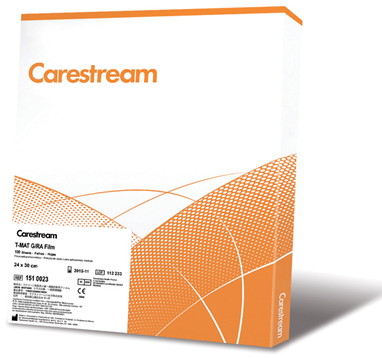

Carestream t-mat
g/ra (tmg)

DESCRIPCIÓN:
Una excelente opción para aplicaciones que requieren alto contraste y alta resolución de imagen. Ideal para radiografía general de alto contraste y estudios especializados.
CARACTERÍSTICAS:
• Excelente resolución en imágenes nítidas y brillantes gracias a la tecnología de grano-T.
– Incremento en el detalle debido al menor cruzamiento fotónico, sin cambio en la velocidad.
– Película de velocidad estándar que puede ser utilizada con pantallas rápidas (hasta velocidad relativa de 600).
• Estable y confiable en procesamiento automático.
– Sensitométricamente estable bajo diversas condiciones de procesamiento.
• La tecnología de grano-T minimiza los defectos de imagen de menor densidad que se producen antes del procesamiento.
• Puede utilizarse con todas las pantallas de tierras raras que emiten al verde como las pantallas Carestream Lanex.
• La tecnología de acceso rápido (RA) permite reducir significativamente el tiempo de procesamiento, con lo que se incrementa la productividad.
DATOS COMPLEMENTARIOS: Si desea obtener más información sobre la película CARESTREAM TMG/RA o la familia de películas Carestream, favor de contactar al representante CARESTREAM de su localidad o a:
CARESTREAM
Teléfono: (33) 3134-6200
o bien, visítenos en: www.carestream.com.mx